An Exploration of Neural Network Expressivity and Approximation Dynamics
Positional Encoding
N = 2, d = 16, 6 bands
Approximation Progression
Loss Progression
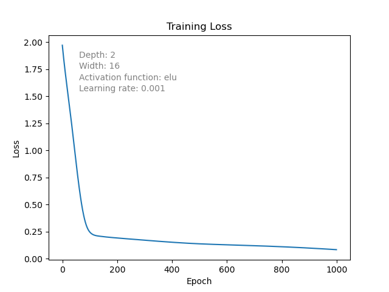
 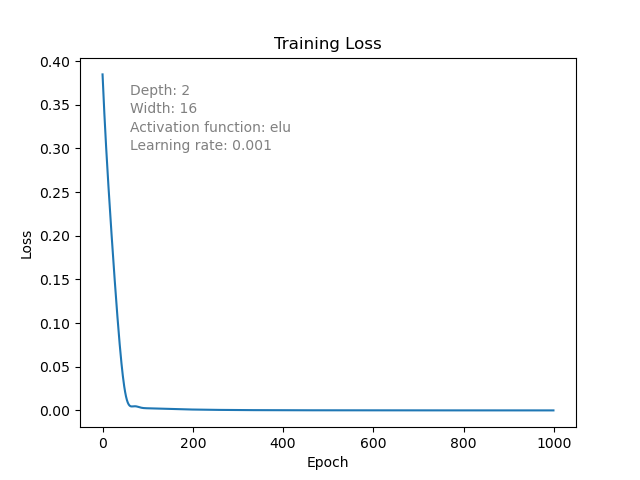
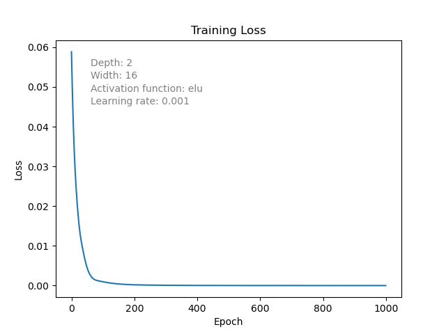
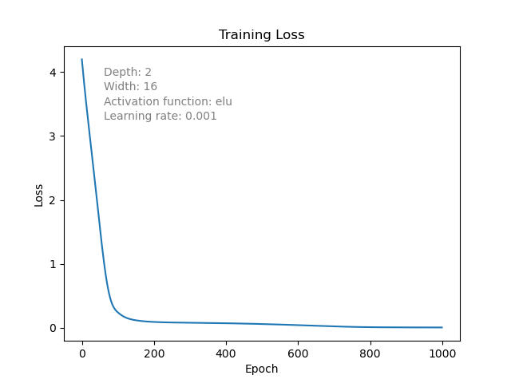
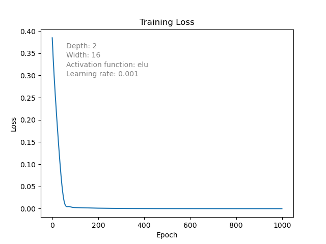
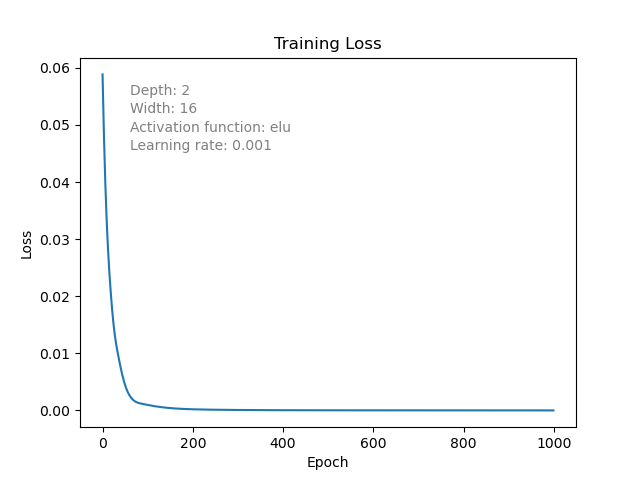
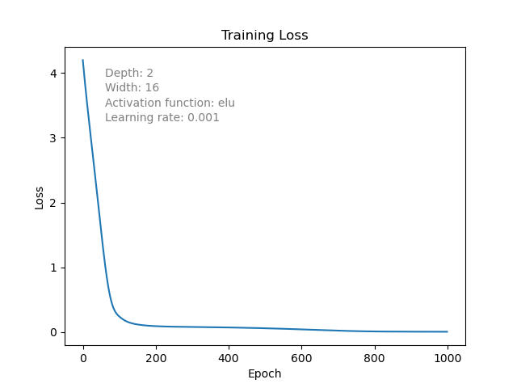
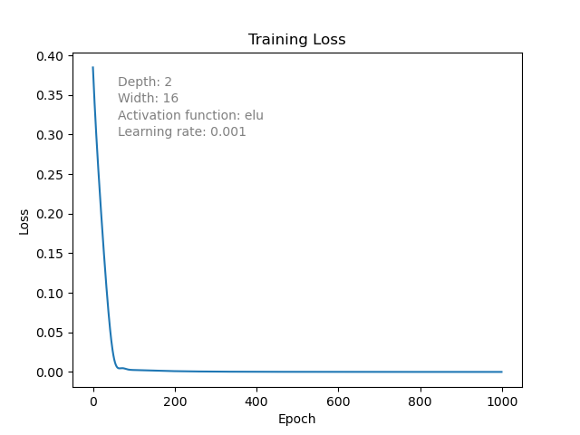
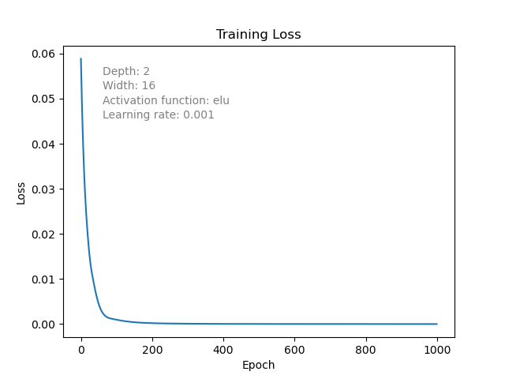
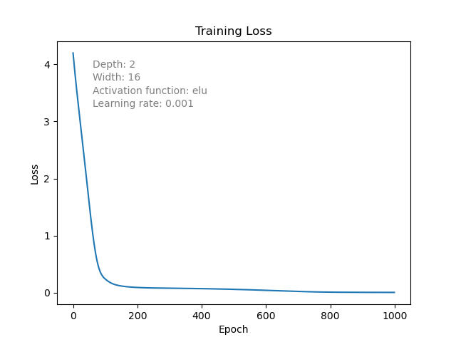
N = 4, d = 32, 6 bands
Approximation Progression
Loss Progression
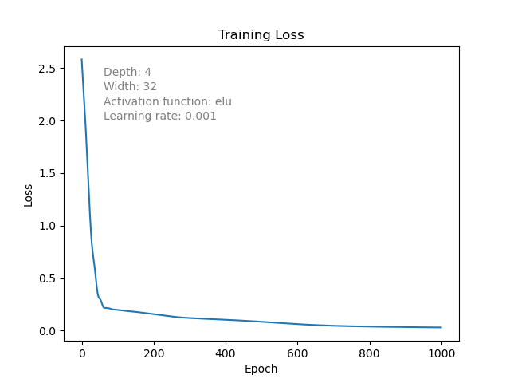
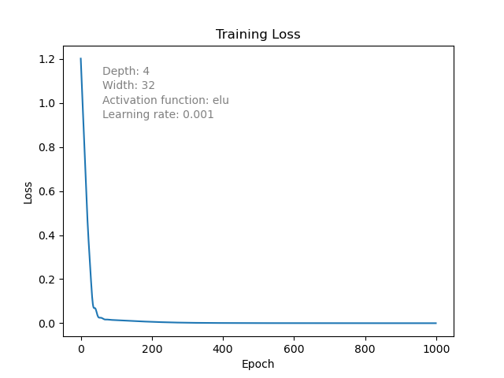
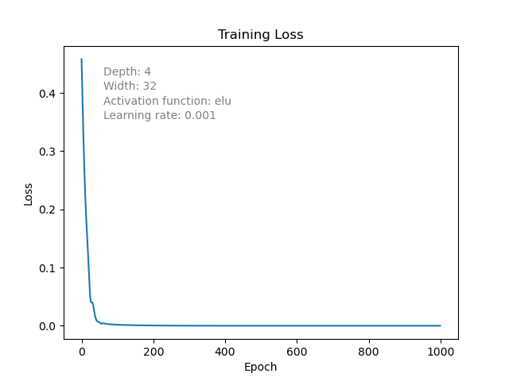
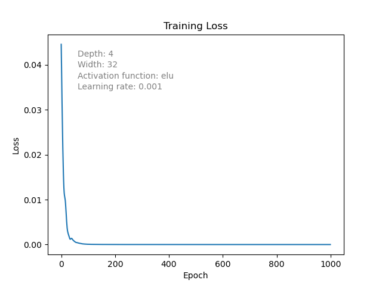
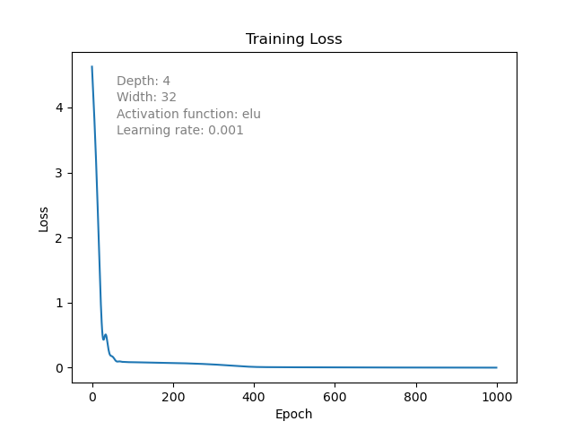